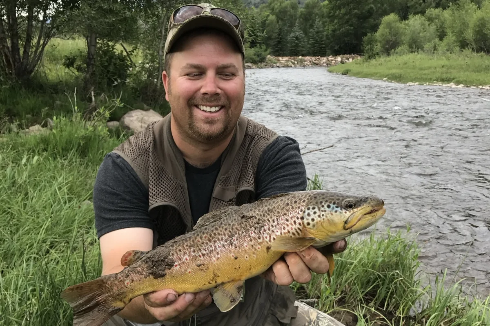
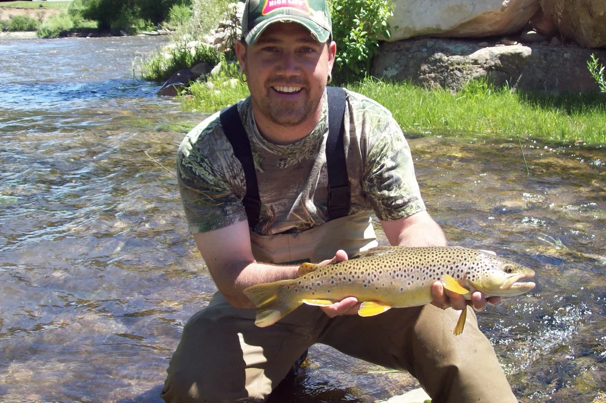
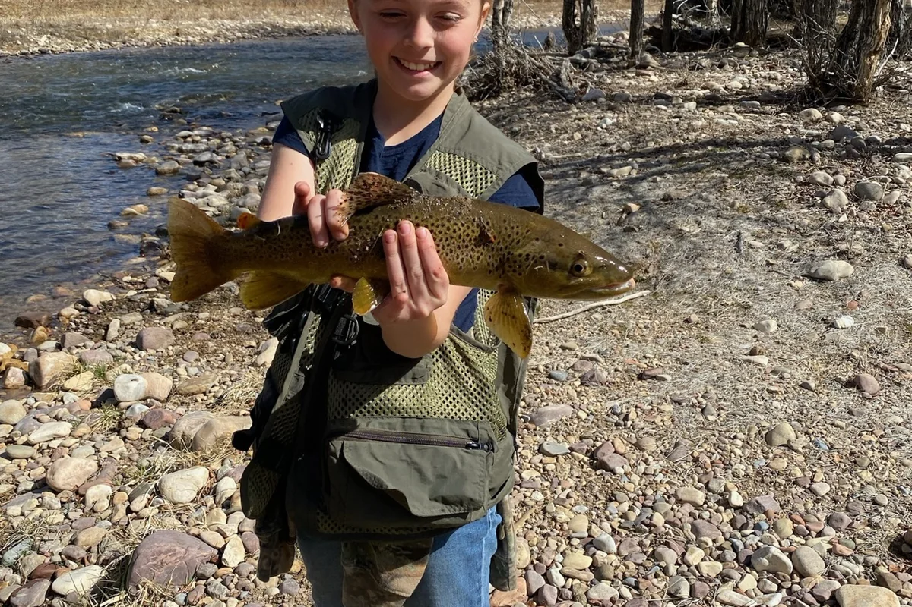
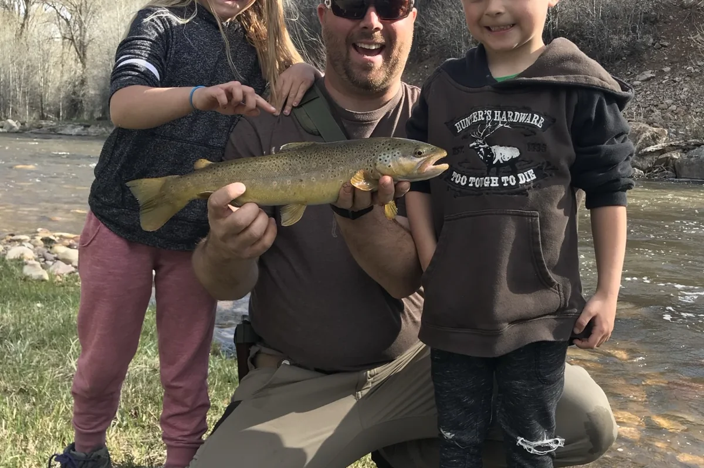
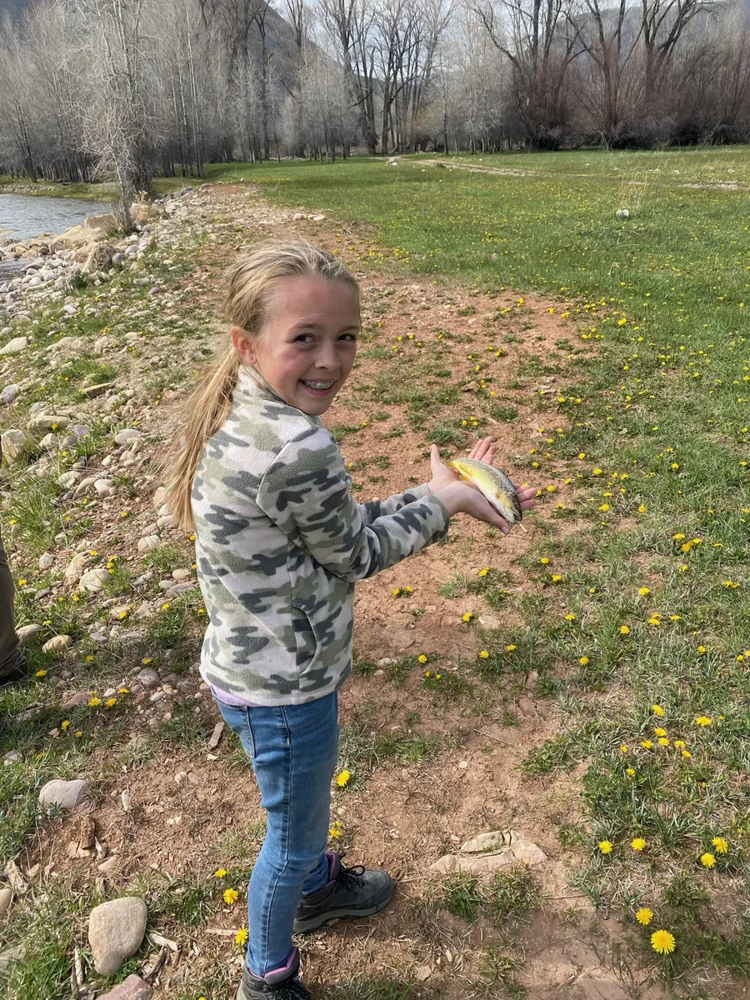
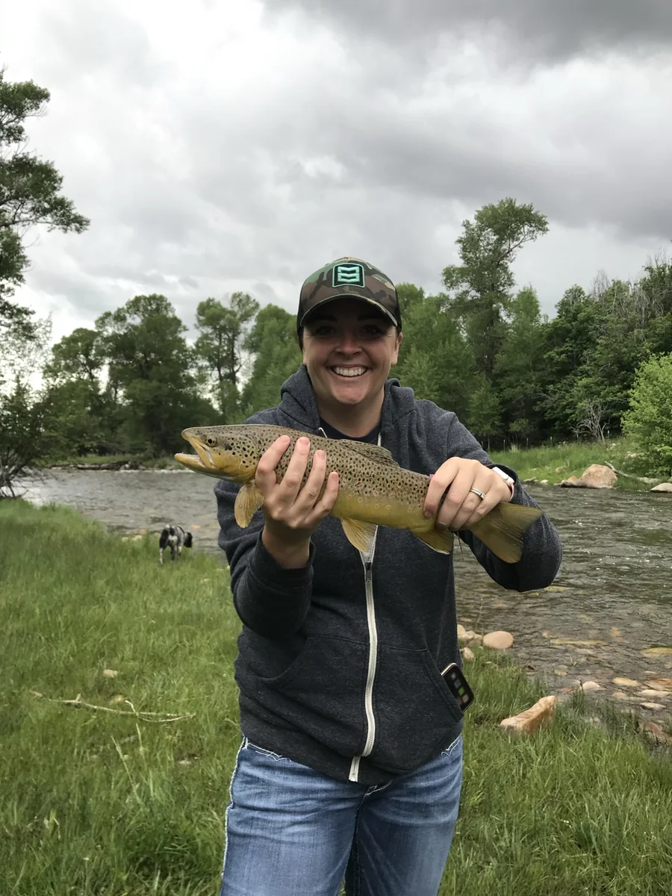

BROWN TROUT
Read Water Before Changing Lures
Current seams, depth changes, cover, and feeding lanes tell you where to spend your time.
Read guide →River Tactics

Current seams, depth changes, cover, and feeding lanes tell you where to spend your time.
Read guide →
Keep the terminal tackle compact and versatile enough to cover pools, riffles, and pocket water.
Read guide →
Short sessions, easy water, simple tackle, snacks, and small wins build lifelong anglers.
Family Outdoors



Start with access, water temperature, current speed, structure, and the obvious holding water before overcomplicating things.
A compact selection of terminal tackle, forceps, leaders, spare line, water, and layers can cover most days.
Success is not measured by fish size. Make the outing comfortable, let them explore, and quit while everyone still wants another cast.
Read guide →